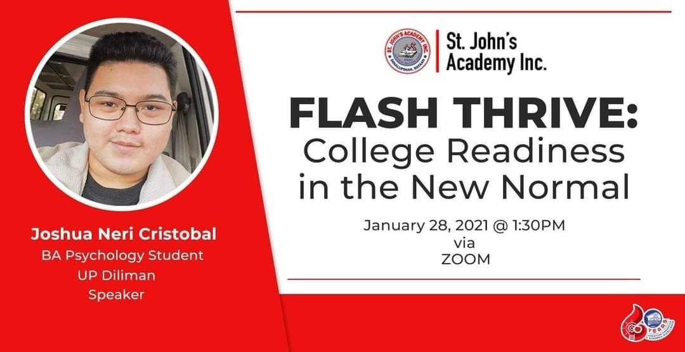
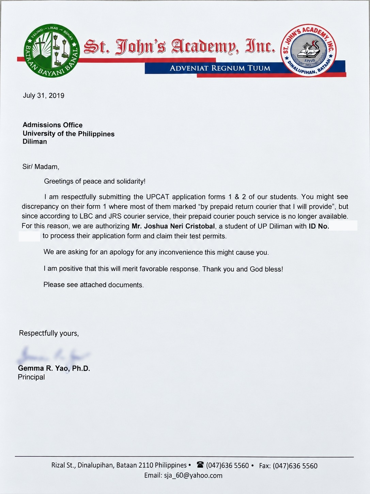

Motivation
What makes someone keep going when learning becomes difficult?
Reflections · Character in practice
A place where confidence, preparation, self-awareness, communication, and growth become visible because people are actively trying to learn, improve, or help someone else do the same.
Reflections
Education and development make the human side of learning easier to see. The same material can meet different levels of confidence, preparation, attention, motivation, support, and expectation.
Learning is not simply a transfer of knowledge. It is an encounter between a person, an environment, and an idea of who that person might become.
Through Character, the questions become more personal: What helps someone persist? What makes them withdraw? Whose expectations matter? What changes when they begin to see themselves differently?
What makes someone keep going when learning becomes difficult?
What changes when people begin to see themselves as capable of more?
What happens when explanation has to meet the person receiving it?
What changes when people can recognize both what they can do and where they still need support?
01 · Experiences in Practice
Arranged from newest to oldest, these cases document moments when learning became something to share, organize, or return to others through preparation, access, communication, and support.

My first invited talk, delivered at my alma mater, became a reflection on self-awareness, uneven starting points, and why college is not only something we survive individually, but something we learn to survive together.
Read case →
How an eight-Saturday review program became a case in preparation, confidence, access, and the practical work behind educational opportunity.
Read case →02 · Essays
These essays preserve the questions, observations, arguments, and interpretations expressed in the original academic work. Later reinterpretation belongs in Insights.
An argumentative essay examining how gender was framed as influencing political leadership through demeanor, performance, and relationships.
Read essay → English 13 · University of the PhilippinesAn argumentative essay on technology, education, media, youth, culture, and the development of Filipino nationhood.
Read essay → Psych 108 · University of the PhilippinesA Psych 108 reflection on service-learning at He Cares Mission, describing empathy, pakikiramdam, kapwa, personal change, faith, and service.
Read reflection → BMAS 100 · University of the PhilippinesA media analysis of Filipino BL series through political economy, audience power, representation, genre, programming, and LGBTQIA visibility.
Read essay → PI 100 · University of the PhilippinesA 2021 essay arguing that liberating education requires attention not only to teaching and curriculum, but also to language, facilities, poverty, health, employment, and other social conditions shaping students' ability to learn.
Read essay →Character → Reflections
Return to Work to see how Character, Creativity, and Community become Reflections, Renaissance, and Resistance through engagement.
Explore Reflections →